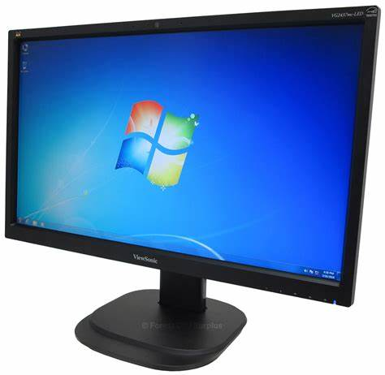

A computer monitor is an output device that displays information in pictorial or textual form. A discrete monitor comprises a visual display, support electronics, power supply, housing, electrical connectors, and external user controls.
The display in modern monitors is typically an LCD with LED backlight, having by the 2010s replaced CCFL backlit LCDs.